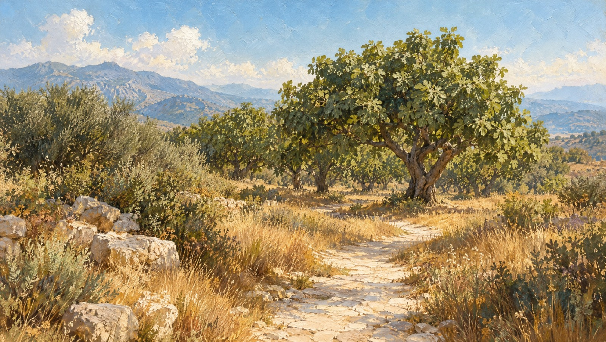

Fig leaf
Fresh, green, sunlit
A scent, rooted in place
A slow passage through leaf, fruit and sun-warmed wood — and into Philosykos.
Begin the walk
01 / 04
The grove
Follow the path beneath the fig trees. The air is warm, the leaves still bright.
The impression
Philosykos gathers the fig in all its changing textures: green leaf, milky fruit and the quiet strength of wood.
Fresh, green, sunlit
Milky, soft, almost wild
Dry, close to the bark
The eau de parfum places white cedar and the woody strength of the tree at the heart of its portrait.
The memory, kept
For the days when a place stays with you after you leave it.
Explore Philosykos